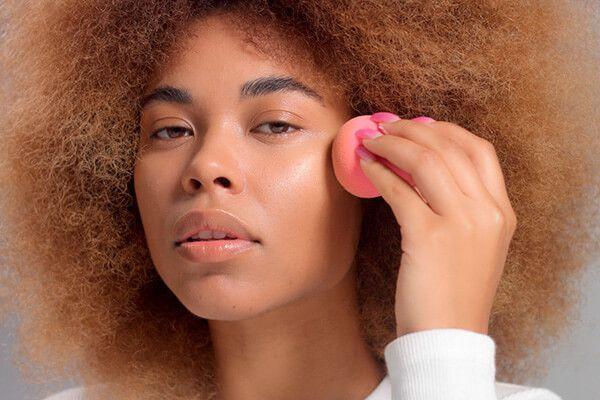
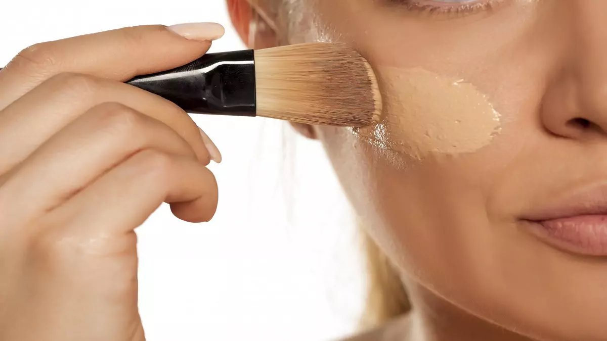
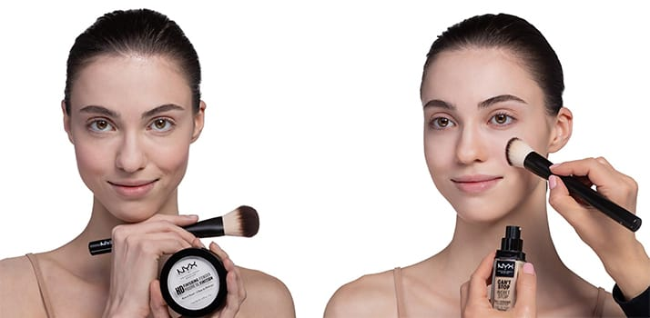

Após a preparação de pele,
aplicamos a base
e espalhamos com o pincel kabuki e usamos uma esponjinha úmida,para um melhor acabamento. Agora aplicamos o
corretivo
embaixo da área dos olhos (nas olheiras) e na área T do rosto
  